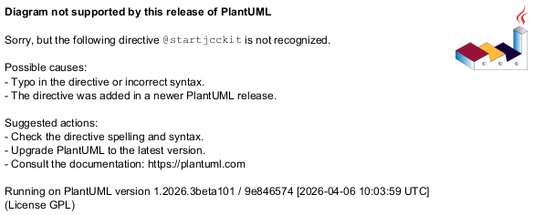

@startjcckit
data/curves = curve2 errors2 curve1 errors1
data/curve1/title = curve 1
data/curve1/x = 0.02 0.11 0.18 0.3 0.42 0.49 0.61
data/curve1/y = 0.68 0.61 0.52 0.41 0.27 0.21 0.11
data/errors1/x = 0.021 0.01 0.017 0.024 0.023 0.025 0.027
data/errors1/y = 0.034 0.028 0.031 0.039 0.03 0.032 0.041
data/curve2/title = curve 2
data/curve2/x = 0.4 0.5 0.6 0.7 0.8 0.9
data/curve2/y = 0.17 0.29 0.45 0.61 0.64 0.66
data/errors2/x = 0 0 0 0 0 0
data/errors2/y = 0.05 0.036 0.059 0.07 0.061 0.053
background = 0xDDDDDD
defaultCoordinateSystem/ticLabelAttributes/fontSize = 0.03
defaultCoordinateSystem/axisLabelAttributes/fontSize = 0.04
defaultCoordinateSystem/axisLabelAttributes/fontStyle = bold
plot/coordinateSystem/xAxis/ = defaultCoordinateSystem/
plot/coordinateSystem/xAxis/minimum = 0.1
plot/coordinateSystem/yAxis/ = defaultCoordinateSystem/
plot/initialHintForNextCurve/className = jcckit.plot.PositionHint
plot/initialHintForNextCurve/origin = 0.06 0.1
#plot/initialHintForNextCurve/position = 0 0
plot/curveFactory/definitions = cdef1 edef1 cdef2 edef2
plot/curveFactory/cdef1/symbolFactory/className = jcckit.plot.ErrorBarFactory
plot/curveFactory/edef1/symbolFactory/className = jcckit.plot.ErrorBarFactory
plot/curveFactory/edef1/symbolFactory/attributes/className = jcckit.graphic.ShapeAttributes
plot/curveFactory/edef1/symbolFactory/attributes/fillColor = 0xcafe
plot/curveFactory/edef1/symbolFactory/attributes/lineColor = 0
plot/curveFactory/edef1/symbolFactory/size = 0.01
plot/curveFactory/edef1/withLine = false
plot/curveFactory/edef1/softClipping = false
plot/curveFactory/cdef2/symbolFactory/className = jcckit.plot.ErrorBarFactory
plot/curveFactory/cdef2/symbolFactory/symbolFactory/className = jcckit.plot.SquareSymbolFactory
plot/curveFactory/cdef2/symbolFactory/symbolFactory/attributes/className = jcckit.graphic.ShapeAttributes
plot/curveFactory/cdef2/symbolFactory/symbolFactory/attributes/fillColor = 0x40c0
plot/curveFactory/cdef2/symbolFactory/symbolFactory/attributes/lineColor =
plot/curveFactory/edef2/ = plot/curveFactory/edef1/
plot/curveFactory/edef2/symbolFactory/attributes/fillColor =
plot/curveFactory/edef2/symbolFactory/attributes/lineColor = 0
plot/curveFactory/edef2/symbolFactory/size = 0
@endjcckit